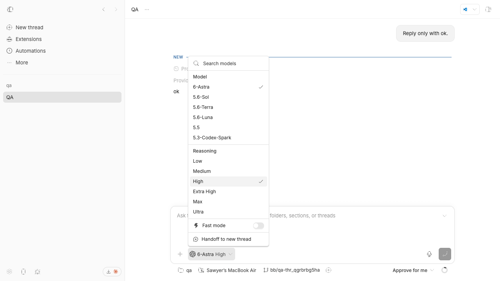
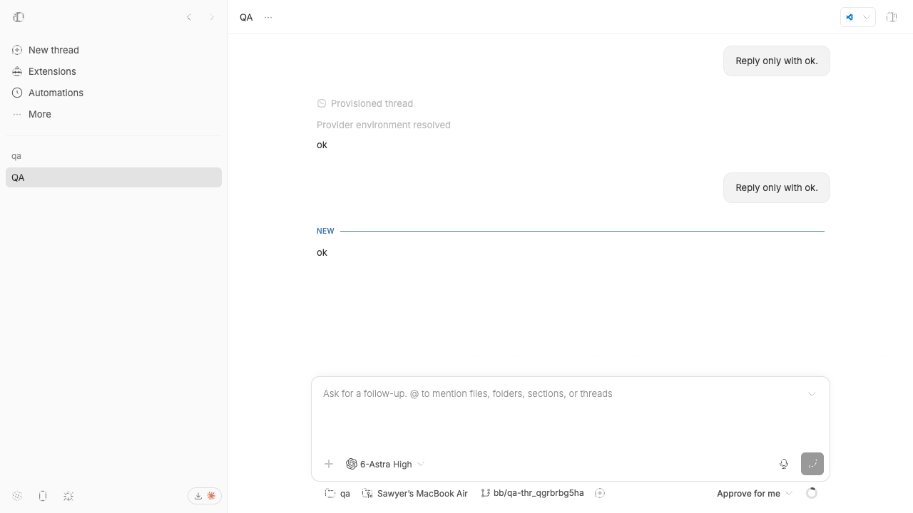
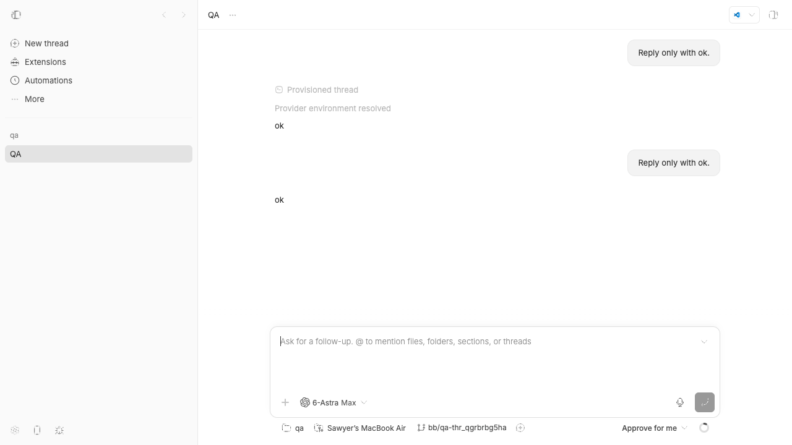

#3257 · Follow-up reasoning selection is not saved as the thread default
Verdict: PARTIALLY REPRODUCED · Root-cause confidence: high
1. TL;DR
A follow-up composer can send a turn with a newly selected reasoning level while leaving the thread's saved default unchanged. In an isolated main-branch run, the follow-up request used High and the default-execution endpoint continued to return Max. The selector remained High through turn completion in that run, so the reported immediate reset was not reproduced; after a page reload, it rehydrated to Max. The client only updates component-local state and the per-turn request, even though the existing thread update endpoint can save a reasoning override.
2. Claims vs findings
| Claim | Status | Evidence |
|---|---|---|
| The chosen follow-up level is used for the submitted turn. | Verified | The isolated event row for the second request recorded reasoningLevel: high. |
| The chosen level is not saved as the thread override. | Verified | After the turn completed, the default-execution endpoint still returned reasoningLevel: max. |
| The selector immediately returns to Max after sending. | Not reproduced | It stayed High through completion and returned to Max only after reload in the isolated Codex-provider run. |
| The behavior is caused by provider translation. | Refuted | The mismatch exists before provider translation: client state is local, the turn request carries High, and no thread update is sent. |
3. Environment
- Trusted source:
get-bb/bb@d5103c44944cf139330907124a1db65bac64e18e - macOS arm64, Node 22.22.3, pnpm 9.15.0
- Isolated dev app ports: app 16721, server 24721, host daemon 32721
- Isolated checkout-derived data directory; no production BB data used
- Live visual run used the built-in Codex provider. Pi was registered but returned no model catalog for the isolated fixture, so the provider-specific timing claim was not tested.
4. Minimal reproduction
- Start the trusted checkout's isolated dev app and create a test thread with a saved Max reasoning override.
- Open that thread, choose High in the composer, enter a minimal follow-up, and submit.
- Wait for the turn to finish, then read the isolated event row and the thread default-execution endpoint.
- Reload the page and inspect the selector again.
Expected saved default: { "reasoningLevel": "high" }
Actual saved default: { "reasoningLevel": "max" }
Submitted turn: { "reasoningLevel": "high" }
Selector after turn: High
Selector after reload: Max



Focused regression test
The test drives the real prompt-area change handler and requires it to invoke the existing thread update mutation. The complete runnable file is saved with the report.
it("persists a changed reasoning level as the thread default", () => {
mocks.defaultExecutionOptions = {
model: "gpt-5",
permissionMode: "auto",
reasoningLevel: "max",
serviceTier: "default",
source: "client/turn/requested",
};
renderPromptArea();
fireEvent.click(
screen.getByRole("button", { name: "Select high reasoning" }),
);
expect(mocks.updateThreadMutate).toHaveBeenCalledWith({
id: "thr_1",
reasoningLevel: "high",
});
});
First checkout: 1 failed, 28 skipped Expected update mutation with High; actual calls: 0 Second clean checkout: 1 failed, 28 passed The same assertion failed at the same trusted commit.
5. Root cause
The follow-up prompt area initializes its execution selector from the thread's resolved defaults but explicitly places the selector in component-local scope. The reasoning picker then receives the local setter directly. Submission copies that local selection into the per-turn request; no thread update mutation is called.
- Prompt-area initialization uses
scope: "component-local"and seeds from resolved thread defaults. - Reasoning picker wiring passes
setReasoningLeveldirectly asonChange. - Follow-up submission includes the local execution selection only in the turn request.
- The existing update route already validates and persists a supplied reasoning override.
reasoning: {
value: reasoningLevel,
options: reasoningOptions,
onChange: setReasoningLevel,
}
This explains both observed facts: High reaches the submitted turn because submission reads local state, while a fresh mount returns to Max because the persisted thread override was never changed. The immediate post-send reset depends on a remount or rehydration event and did not occur in the isolated Codex run.
6. Proposed fix (first principles)
Wrap the reasoning picker change handler so it updates local selection immediately and calls the existing useUpdateThread mutation with the thread ID and selected reasoning level. Reuse the existing mutation error reporting. The focused component test should fail before the change and pass afterward, followed by the complete prompt-area suite, app typecheck, and app build.
7. Related issues
No duplicate or linked open pull request was found. Repository history shows that thread model and reasoning overrides were introduced as sticky thread-level settings in commit 1a5620b53, while the follow-up picker remained component-local.
8. Verification
The same agent repeated the regression test in a second clean detached checkout at d5103c44944cf139330907124a1db65bac64e18e. The added assertion failed with zero update calls, and all other 28 tests in the file passed. No report claim was removed after the second run. The live run refined the report from a full reproduction to a partial reproduction because the selector stayed High until reload.
9. Appendix
Commands were run only against the trusted repository and isolated dev instance:
pnpm install --frozen-lockfile --prefer-offline
pnpm exec turbo run build
pnpm exec turbo run test --filter=@bb/app -- --run src/views/thread-detail/ThreadDetailPromptArea.test.tsx
scripts/bb-dev-app current
pnpm bb:dev thread spawn --project <isolated-project> --new-environment worktree --provider codex --reasoning-level max --permission-mode auto --prompt "Reply only with ok." --json
curl PATCH /api/v1/threads/<isolated-thread> { "reasoningLevel": "max" }
curl GET /api/v1/threads/<isolated-thread>/default-execution-options
Sanitized results: repro/result.txt. The issue content was treated as untrusted data; no issue-provided link, branch, patch, script, or binary was opened or executed.